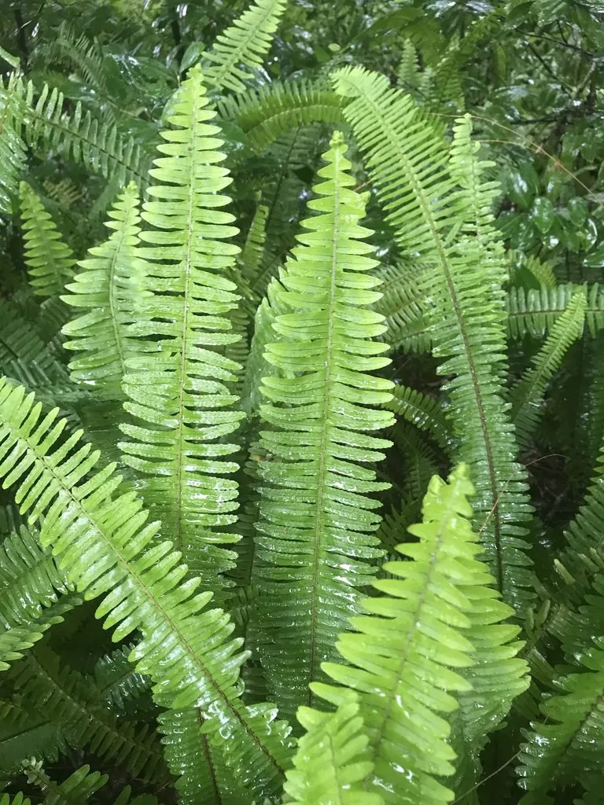

蕨类与裸子植物 · 植物界
波士顿蕨 Nephrolepis exaltata

波士顿蕨是肾蕨的园艺品种，叶片细密低垂、姿态轻盈，耐阴好养，是室内悬挂盆栽中经典的观叶植物。
- 分类
- 门蕨类植物门纲水龙骨纲目水龙骨目科肾蕨科属肾蕨属
- 栖息环境
- 室内散射光环境与温暖湿润的温室，忌强光和干燥
- 地理分布
- 园艺品种，世界各地广泛栽培
- 保护级别
- 暂无评估（园艺栽培品种）
物种志
波士顿蕨是肾蕨科肾蕨的园艺品种，株高 0.4–1 m。根状茎短，叶丛生；叶片为一回羽状复叶，羽片细密、边缘有细锯齿，鲜绿色，叶轴细长，整片叶自然向外下垂，形成蓬松优美的株形。波士顿蕨一般不产生孢子，主要通过分株和组织培养繁殖。
波士顿蕨由肾蕨在栽培中变异选育而来，19 世纪末在美国波士顿被发现并推广，因此得名。它喜温暖湿润、半阴环境，不耐强光直射和干燥空气，适宜在室内散射光处悬挂或摆放在高架上栽培。波士顿蕨叶形轻盈、株形饱满，是室内观叶和垂吊绿化的常用材料，也被认为能增加空气湿度。养护时需保持土壤湿润和较高空气湿度，冬季注意防寒。
形态与习性
- 株高0.4–1 m
- 叶一回羽状复叶，羽片细密下垂
- 繁殖分株与组织培养为主
- 光照喜半阴散射光
- 用途室内垂吊盆栽与观叶
趣味知识
- 波士顿蕨是肾蕨的园艺变异品种，19 世纪末在美国波士顿被发现。
- 它一般不产生孢子，主要靠分株和组织培养繁殖。
- 波士顿蕨叶姿轻盈下垂，是室内悬挂盆栽的经典植物。